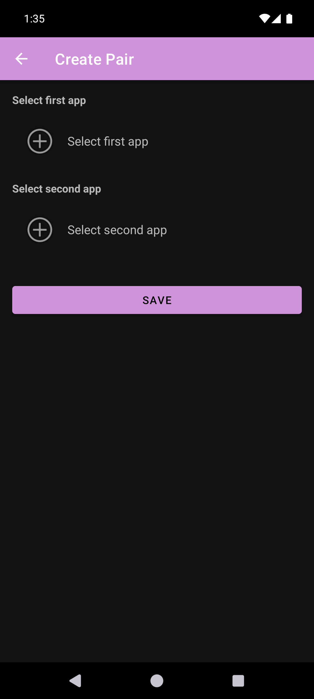
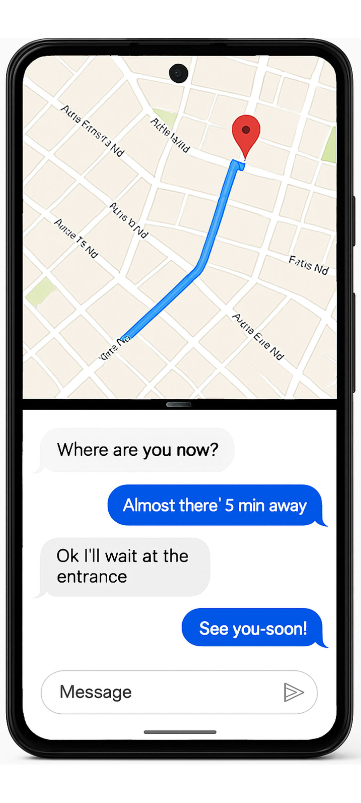

- Eines der wenigen Android-Splitscreen-Tools, die unter Android 15 und 16 zuverlässig funktionieren.
- Die meisten Mitbewerber sind zerbrochen, als Google die zugrunde liegenden APIs geändert hat; wir haben bei jeder aktuellen OS-Umstellung weiter Updates ausgeliefert.
- Keine Werbung, keine
INTERNET-Berechtigung, unter Android 12L+ kein Bedienungshilfen-Dienst nötig. Gesamtgröße: ~2,8 MB. - Die kostenlose Stufe deckt den Kernnutzen ab. Das Pro-Abo kostet etwa 1 $/Monat – ungefähr ein Zehntel des nächstgelegenen kostenpflichtigen Konkurrenten.
- Wer auf Pixel unterwegs ist und Galaxys App Pair vermisst, erhält hier den dichtesten Ersatz, den wir gesehen haben.
- Hintergrund: Warum „App Pair" unter Android wichtig ist
- Was Split Screen Launcher tatsächlich macht
- Das Android-15/16-Problem – und warum die meisten Mitbewerber ausfielen
- Berechtigungen und Datenschutz
- Vergleich mit anderen Splitscreen-Apps
- Preis
- Für wen die App ist (und wer sie überspringen sollte)
- Fazit
1. Hintergrund: Warum „App Pair" unter Android wichtig ist
Android unterstützt Splitscreen-Multitasking seit Version 7.0 (Nougat, 2016). Was es auf Systemebene nie konnte: Kombinationen aus zwei Apps zu speichern und gemeinsam zu starten. Samsung fügte das bereits 2017 als „App Pair" in One UI hinzu, und wer vom Galaxy auf Pixel wechselt, bemerkt fast sofort, dass die Funktion fehlt.
Die Umgehung besteht darin, einen Drittanbieter-Launcher zu installieren, der den Zweischritt automatisiert: App A öffnen, App B ins benachbarte Fenster öffnen. Google Play listet Dutzende davon – das Ökosystem ist aber unübersichtlicher, als es aussieht, denn jede Android-Version verändert, wie der Splitscreen aufgerufen werden kann, und die meisten dieser Apps erhalten keine Updates.
2. Was Split Screen Launcher tatsächlich macht
Split Screen Launcher ist ein Tool mit nur einem Zweck. Man wählt zwei Apps, gibt dem Paar einen Namen („Pendeln", „Arbeit", „YouTube + X") und das Paar erscheint als Zeile in der App. Ein Tipp darauf öffnet beide Apps nebeneinander.


Das ist tatsächlich der gesamte Funktionsumfang. Kein eingebauter Browser, keine schwebenden Widgets, keine Integration in die Benachrichtigungsleiste. Die APK ist etwa 2,8 MB groß – kleiner als die meisten App-Symbole – und lässt nichts im Hintergrund laufen.
Paare, die wir beim Testen genutzt haben:
- Google Maps + Spotify – beim Autofahren
- YouTube + X (Twitter) – Second-Screen-Konsum
- Chrome + Google Keep – Recherche mit Notizen
- Gmail + Slack – Arbeits-Triage
- Taschenrechner + Chrome – Preisvergleich zwischen Tabs
Ein leicht zu übersehendes Detail, das wir aber gesondert erwähnen: Die Paardaten lassen sich in eine Sicherungsdatei exportieren. Klingt belanglos, aber mehrere Konkurrenten in dieser Kategorie legen ihre Paare im privaten App-Speicher ab – ohne Exportpfad. Ein Handywechsel bedeutet dort, jedes Paar von Hand neu anzulegen. Wir haben Backup/Restore gerade deshalb von Anfang an als erstklassige Funktion eingebaut, damit ein Wechsel von Pixel zu Pixel den gesamten Satz in Sekunden wiederherstellt.
Eine weitere Design-Entscheidung, die wir vorab ansprechen sollten: Die App legt keine Homescreen-Verknüpfungen an. Jedes Paar bleibt in der App. Das ist ein Kompromiss. Nachteil: Ein Paar zu starten heißt, die App erst zu öffnen – ein Tipp mehr als bei Konkurrenten, die auf Verknüpfungen setzen. Der Vorteil ist doppelt: Der Homescreen wird nicht mit Paar-Symbolen zugemüllt, und die App hängt nicht davon ab, was der aktuelle Launcher (Pixel Launcher, Nova etc.) mit dem Verhalten seiner Verknüpfungen macht. Letzteres wiegt mehr, als es klingt – wie in Abschnitt 3 angemerkt, sind Launcher, die auf Shortcut-Intents setzen, genau die, die bei Android-15- und 16-Übergängen gerne brechen. Innerhalb der App zu bleiben isoliert das Tool von dieser ganzen Fehlerklasse.
Für wen die App ist (und wer sie überspringen sollte)
Bevor wir in den technischen Teil eintauchen, hier ein schneller Eignungs-Check, damit du entscheiden kannst, ob der Rest des Artikels deine Zeit wert ist.
Passt zu dir, wenn du …
- regelmäßig die gleichen zwei Apps gemeinsam nutzt (Karten + Musik, E-Mail + Chat)
- auf Pixel oder Pur-Android bist und Samsungs App Pair vermisst
- Apps ohne Werbung und Tracking-SDKs bevorzugst
- Android 12L oder neuer nutzt (keine Bedienungshilfen-Berechtigung nötig)
- etwas willst, das auch nach OS-Updates weiterläuft
Lieber überspringen, wenn du …
- den Splitscreen ohnehin kaum nutzt
- ein schwebendes Widget, Gestensteuerung oder Tasker-Integration willst
- ein Samsung-Gerät besitzt – das eingebaute App Pair von One UI ist schon ausgezeichnet
- Homescreen-Verknüpfungen der In-App-Verwaltung vorziehst
Noch interessiert? Der Rest des Artikels behandelt den technischen Hintergrund – warum Android 15 und 16 die meisten Alternativen zerlegt haben und welche Design-Entscheidungen hinter unserem Ansatz stehen.
3. Das Android-15/16-Problem – und warum die meisten Mitbewerber ausfielen
Das ist der interessante Teil – und der Grund, warum die meisten konkurrierenden Apps nicht mehr funktionieren.
Historisch haben Splitscreen-Launcher auf einer Handvoll systemnaher APIs aufgesetzt, die Google nach und nach verschärft oder entfernt hat. Jede neue Android-Version hat die Wege, auf denen Drittanbieter-Apps zwei Apps nebeneinander starten können, kleiner gemacht. Android 15 und 16 haben insbesondere die am häufigsten genutzten Routen geschlossen. Shell-Level-Workarounds scheitern auf ähnliche Weise.
Im Klartext: Die „Tricks", mit denen Drittanbieter-Apps das Gerät in den Split-Modus gekippt haben, funktionieren unter Android 15 und 16 nicht mehr. Die meisten Apps in dieser Kategorie haben nie einen Fix ausgeliefert.
Split Screen Launcher erreicht den Splitscreen unter Android 15 und 16 zuverlässig auf einem anderen Weg. Den genauen Mechanismus behalten wir für uns – es brauchte einiges an Experimentieren, um eine Kombination zu finden, die über mehrere OS-Versionen hinweg funktioniert, und das Rezept zu veröffentlichen hieße, es jedem zerbrochenen Mitbewerber in die Hand zu drücken. Sagen können wir: Unsere Release-Historie spiegelt aktive Pflege durch die Android-12-, 12L-, 14-, 15- und 16-Übergänge wider, und wir wollen dieses Tempo beibehalten.
android:resizeableActivity="false" in ihrem Manifest – Pur-Kamera und Google Files sind die offensichtlichen Beispiele – und statt ein Paar zu bilden, öffnen sie sich einfach allein im Vollbild (Samsungs eingebautes App Pair verhält sich genauso).
Workaround: Aktiviert man unter
Einstellungen → System → Entwickleroptionen → Aktivitäten in einstellbarer Größe erzwingen sowie Nicht skalierbare Apps in Mehrfenster zulassen, funktionieren auch diese Apps im Splitscreen. Die In-App-Hilfe („So nutzt du Apps mit ‚Funktioniert evtl. nicht'") enthält die Schritt-für-Schritt-Anleitung.
4. Berechtigungen und Datenschutz
Unter Android 12L und neuer braucht die App weder Laufzeit-Berechtigungen noch einen Bedienungshilfen-Dienst. Alles läuft über Standard-Activity-Flags.
Unter Android 9 bis 12 braucht die App die Bedienungshilfen-Berechtigung, weil das die einzige verfügbare API ist. Die Play-Store-Beschreibung sagt klar, dass dieser Dienst ausschließlich dazu dient, den Splitscreen zu starten. Die von Google Play angezeigte Berechtigungsliste ist so kurz, dass sie komplett auf einen Bildschirm passt – kein Standort, keine Kontakte, kein Speicher und (bemerkenswerterweise) kein Netzwerk. In dieser Ecke des Play Store ist das für sich genommen schon ungewöhnlich.
Im Klartext: In älteren Android-Versionen gab es keine offizielle API, um den Splitscreen auszulösen, also war der Bedienungshilfen-Dienst der einzige gangbare Weg. Das ist eine Alt-Einschränkung, nichts, was die App verwendet, um deinen Bildschirm auszulesen.
Zum Vergleich: Die meisten kostenlosen Splitscreen-Apps im Play Store bündeln Werbe-SDKs (AdMob, Unity, IronSource), was die INTERNET-Berechtigung plus das dazugehörige Tracker-Paket bedeutet. Wir haben uns stattdessen für ein minimales Abomodell entschieden – teils, um die Berechtigungsliste sauber zu halten, teils, weil Werbe-SDKs die Größe eines 2,8-MB-Tools mehr als verdreifachen würden.
5. Vergleich mit anderen Splitscreen-Apps
Vor dem eigentlichen Vergleich lohnt sich eine Skizze der Landschaft. „App-Pair"-artige Funktionalität wird aus verschiedenen Blickwinkeln angegangen:
- Hersteller-spezifische Umsetzungen – Samsungs App Pair (seit One UI, 2017), dazu Varianten bei Xiaomi, OPPO und dem alten LG. Laufen nur auf Geräten des jeweiligen Herstellers.
- Drittanbieter-Tools – eigenständige Apps, die sich diesem einen Anwendungsfall widmen. Die meisten bauen auf OS-APIs auf, die in jüngeren Android-Versionen eingeengt oder gestrichen wurden, weshalb das Feld spürbar geschrumpft ist.
- Automatisierungsansätze – Tasker und vergleichbare Tools können einen Split-Start skripten, sie setzen aber auf den gleichen Grundbausteinen auf wie dedizierte Apps und erben damit dieselben Defekte. Außerdem muss der Nutzer jedes Paar selbst konstruieren.
Vor diesem Hintergrund sind hier die drei am häufigsten erwähnten dedizierten Alternativen auf Google Play Anfang 2026:
| Merkmal | Split Screen Launcher (sakura.dev.jp) |
Split Screen Launcher (CCS Software Inc.) |
Split Screen Shortcut (Toolhouse) |
|---|---|---|---|
| Funktioniert unter Android 15/16 | ✓ Ja | Teilweise / Fehler-Meldungen | ✗ Als defekt gemeldet |
| Werbung (kostenlose Stufe) | ✓ Keine | ✗ Banner + Interstitial | ✗ Interstitial |
| APK-Größe | ~2,8 MB | ~15 MB | ~8 MB |
| Bedienungshilfen-Berechtigung nötig | Nur unter Android 9–12 | Immer | Immer |
| Netzwerk-Berechtigung im Manifest | ✓ Nicht deklariert | Deklariert (Werbung) | Deklariert (Werbung) |
| Preis Pro/Premium | ~1 $ / Monat | Lokal ~₱775 (~13 $) berichtet | Einmalig ~3 $ |
| Letztes Update | März 2026 | Juni 2025 | 2023 |
Konkurrenz-Zahlen basieren auf aktuellen Google-Play-Einträgen im März 2026. Preise variieren je nach Region. Auf schmalen Bildschirmen horizontal scrollen.
Die App von CCS Software ist der Platzhirsch in dieser Nische – über 1,9 Mio. Downloads, weit mehr als alles andere – aber ihr letztes Update liegt vor Android 15, und aktuelle Nutzerbewertungen bei Google Play beklagen, dass sie den Splitscreen auf Pixel 8, 9 und 10 unter Android 15 oder 16 nicht mehr korrekt startet. Eine andere App, „Split Screen Easy Multitasking", verlangt 18,99 $ pro Woche für Premium-Funktionen, was in Reddit-Threads breit kritisiert wird.
Anders gesagt: Das Feld ist gerade ungewöhnlich schwach besetzt. Eine kleine, aktiv gepflegte, werbefreie App wie diese hat es leicht, herauszustechen – sofern Nutzer sie finden.
6. Preis
Die kostenlose Stufe begrenzt die Anzahl gespeicherter Paare, damit Nutzer den kompletten Ablauf ausprobieren können, bevor sie entscheiden, ob die App zu ihren Gewohnheiten passt. Die Kernfunktionen – Paare anlegen, starten, Backup/Restore – funktionieren alle ohne Bezahlung.
Das Pro-Abo kostet je nach Region ungefähr 1 $ pro Monat, hebt das Paar-Limit auf und bringt Ordner-Organisation sowie Icon-Farb-Anpassung mit. Standard-Google-Play-Abo, jederzeit kündbar.
Zur Einordnung: Die Premium-Stufe der CCS-Software-App wurde für die Philippinen mit etwa 13 $ gemeldet, und „Split Screen Easy Multitasking" verlangt 18,99 $ pro Woche. Mit 1 $/Monat liegen wir also ungefähr eine Größenordnung unter dem nächstgelegenen bezahlten Mitbewerber.
7. Fazit – für wen sie gedacht ist
Für wen ist sie? Ehrlicher Blick
Wir halten diese App nicht für jeden geeignet. Wenn du noch keine feste Zwei-App-Gewohnheit hast (Karten + Musik, E-Mail + Chat etc.), wirst du sie wahrscheinlich nicht oft öffnen. Aber wenn du Pur-Android nutzt und Galaxys App Pair seit dem Wechsel auf Pixel vermisst, haben wir sie für dich gebaut – und wir haben versucht, den am wenigsten kompromissbehafteten Weg zurück zu diesem Verhalten zu liefern. Die werbefreie Haltung und der Preis von 1 $/Monat sind bewusste Entscheidungen, und wir halten sie für die richtigen in dieser Kategorie.
Pro
- Funktioniert tatsächlich unter Android 15 und 16
- Keine Werbung in keiner Stufe
- 2,8 MB, keine Hintergrunddienste
- Unter Android 12L+ keine Bedienungshilfen-Berechtigung
- Keine Netzwerk-Berechtigung deklariert
- Pro-Stufe ab ~1 $/Monat, 10× günstiger als die Konkurrenz
- Backup/Restore für Gerätewechsel
- In 15 Sprachen lokalisiert
Kontra
- Zwischen Tipp und Erscheinen des Splitscreens liegt eine spürbare Verzögerung von ~1 Sekunde. Das sind weitgehend systemseitige Kosten – der Eintritt in den Split-Modus unter Android 12L+ umfasst mehrere Task-Übergänge, die das System intern sequenziert, sodass jede App in dieser Kategorie im Bereich von 0,8–1,2 s liegt. Kein Bug, aber man sollte darauf vorbereitet sein
- Keine Homescreen-Verknüpfungen, kein schwebendes Widget, keine Gestensteuerung, keine Tasker-Integration – ein Paar zu starten heißt, erst die App zu öffnen. Bewusste Design-Entscheidung (siehe Abschnitt 2), kostet aber einen Tipp
- Die Liste beim Paaranlegen zeigt alle installierten Apps ohne Kategorien, was ab ~60 Apps auf dem Gerät mühsam wird
- Einzelentwickler, also keine taggleichen Fixes zu erwarten, wenn du auf einer Nicht-Pixel-ROM in einen Randfall läufst